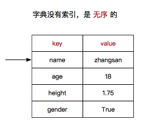

<!DOCTYPE lake>
<h2 data-lake-id="RBoV3" data-lake-index-type="2" id="RBoV3"><span data-lake-id="u894d2aab" id="u894d2aab">字典简介</span></h2><p data-lake-id="udbc6a0fd" id="udbc6a0fd"><span data-lake-id="u7cc083a7" id="u7cc083a7">dictionary（字典） 是 除列表以外 Python 之中 最灵活 的数据类型，类型为</span><code data-lake-id="u22041607" id="u22041607"><span data-lake-id="u6600a444" id="u6600a444">dict</span></code></p><ul list="u6be3a760"><li data-lake-id="uf3de1ae2" fid="u1d723a6c" id="uf3de1ae2"><span data-lake-id="ub74d16cd" id="ub74d16cd">字典同样可以用来存储</span><strong><span data-lake-id="u141dee33" id="u141dee33">多个数据</span></strong></li><li data-lake-id="uc3756151" fid="u1d723a6c" id="uc3756151"><span data-lake-id="u08f889bb" id="u08f889bb">字典使用</span><strong><span data-lake-id="ua6da4867" id="ua6da4867">键值对</span></strong><span data-lake-id="ucffb4ae4" id="ucffb4ae4">存储数据</span></li></ul><p data-lake-id="ue542f6cb" id="ue542f6cb"></p><h2 data-lake-id="ydTTT" data-lake-index-type="2" id="ydTTT"><span data-lake-id="u3fc4dbe1" id="u3fc4dbe1">字典的定义</span></h2><ul list="ud1675237"><li data-lake-id="ue9372cc8" fid="u77b3912d" id="ue9372cc8"><span data-lake-id="u1ebe211e" id="u1ebe211e">字典用</span><code data-lake-id="u8e95e906" id="u8e95e906"><span data-lake-id="ue37af856" id="ue37af856">{}</span></code><span data-lake-id="ufe097674" id="ufe097674">定义</span></li><li data-lake-id="u72529f45" fid="u77b3912d" id="u72529f45"><span data-lake-id="ubf428f17" id="ubf428f17">键值对之间使用</span><code data-lake-id="u6358f32e" id="u6358f32e"><span data-lake-id="u13ae6219" id="u13ae6219">,</span></code><span data-lake-id="u86250bc0" id="u86250bc0">分隔</span></li><li data-lake-id="ude510b34" fid="u77b3912d" id="ude510b34"><strong><span data-lake-id="u79bd40e0" id="u79bd40e0">键</span></strong><span data-lake-id="u3ebd57cb" id="u3ebd57cb">和</span><strong><span data-lake-id="ud004c390" id="ud004c390">值</span></strong><span data-lake-id="u67e9774d" id="u67e9774d">之间使用</span><code data-lake-id="u3491c09c" id="u3491c09c"><span data-lake-id="u600dcdc9" id="u600dcdc9">:</span></code><span data-lake-id="u6b3f9bad" id="u6b3f9bad">分隔</span></li></ul><span class="yuque-card-unsupported">[codeblock]</span><h2 data-lake-id="bVlNi" data-lake-index-type="2" id="bVlNi"><span data-lake-id="ud9d4a336" id="ud9d4a336">字典的特点</span></h2><p data-lake-id="u3b3d39bd" id="u3b3d39bd"><span data-lake-id="ucca1632c" id="ucca1632c">字典中的</span><strong><span data-lake-id="u3e56814e" id="u3e56814e">键</span></strong><span data-lake-id="uf2c26854" id="uf2c26854">相当于索引，必须是</span><strong><span data-lake-id="u51bc57d6" id="u51bc57d6">唯一的</span></strong></p><span class="yuque-card-unsupported">[codeblock]</span><p data-lake-id="u62be488f" id="u62be488f"><span data-lake-id="u435427fa" id="u435427fa">运行:</span></p><span class="yuque-card-unsupported">[codeblock]</span><h2 data-lake-id="BTWOd" data-lake-index-type="2" id="BTWOd"><span data-lake-id="uf09ee048" id="uf09ee048">字典增删改查</span></h2><h3 data-lake-id="Aw8BE" data-lake-index-type="2" id="Aw8BE"><span data-lake-id="u0f675b1c" id="u0f675b1c">增加</span></h3><p data-lake-id="uea9c65f0" id="uea9c65f0"><span data-lake-id="ubef436c2" id="ubef436c2">字典增加元素</span></p><span class="yuque-card-unsupported">[codeblock]</span><p data-lake-id="u684029e8" id="u684029e8"><span data-lake-id="u52ff2e1c" id="u52ff2e1c">也可以通过</span><span data-lake-id="uebae7489" id="uebae7489">setdefault</span><span data-lake-id="uce4ced71" id="uce4ced71">方法添加</span></p><span class="yuque-card-unsupported">[codeblock]</span><h3 data-lake-id="K8dK4" data-lake-index-type="2" id="K8dK4"><span data-lake-id="ud6fbec98" id="ud6fbec98">删除</span></h3><p data-lake-id="uc29cbbee" id="uc29cbbee"><span data-lake-id="uf8e8346d" id="uf8e8346d">字典删除元素</span></p><span class="yuque-card-unsupported">[codeblock]</span><p data-lake-id="u3ba19cee" id="u3ba19cee"><span data-lake-id="uc17cc2f8" id="uc17cc2f8">也可以通过</span><span data-lake-id="ubdc899ff" id="ubdc899ff">pop</span><span data-lake-id="ub9ffa3ca" id="ub9ffa3ca">删除</span></p><span class="yuque-card-unsupported">[codeblock]</span><p data-lake-id="uf99e0f64" id="uf99e0f64"><span data-lake-id="u68bae282" id="u68bae282">清空字典</span></p><span class="yuque-card-unsupported">[codeblock]</span><h3 data-lake-id="wjXYR" data-lake-index-type="2" id="wjXYR"><span data-lake-id="ubbf549f8" id="ubbf549f8">修改</span></h3><p data-lake-id="u7b1cf2ae" id="u7b1cf2ae"><span data-lake-id="u52770e5a" id="u52770e5a">修改字典中元素</span></p><span class="yuque-card-unsupported">[codeblock]</span><h3 data-lake-id="EPpWF" data-lake-index-type="2" id="EPpWF"><span data-lake-id="uc6eb5dc2" id="uc6eb5dc2">查询</span></h3><p data-lake-id="u6c855d29" id="u6c855d29"><span data-lake-id="u65d62fe5" id="u65d62fe5">查询元素</span></p><span class="yuque-card-unsupported">[codeblock]</span><h2 data-lake-id="AqzBp" data-lake-index-type="2" id="AqzBp"><span data-lake-id="ue846418b" id="ue846418b">字典遍历</span></h2><h3 data-lake-id="Ut9RR" data-lake-index-type="2" id="Ut9RR"><span data-lake-id="u300cd832" id="u300cd832">遍历所有的键值对</span></h3><p data-lake-id="uea1e2356" id="uea1e2356"><span data-lake-id="ue35a3296" id="ue35a3296">通过</span><code data-lake-id="u31e42eb9" id="u31e42eb9"><span data-lake-id="u6e17c005" id="u6e17c005">for</span></code><span data-lake-id="u68843a34" id="u68843a34">循环遍历字典所有的键值对</span></p><span class="yuque-card-unsupported">[codeblock]</span><p data-lake-id="u8ceade41" id="u8ceade41"><span data-lake-id="ud099f33b" id="ud099f33b">结果:</span></p><span class="yuque-card-unsupported">[codeblock]</span><h3 data-lake-id="SpMyx" data-lake-index-type="2" id="SpMyx"><span data-lake-id="uad82c084" id="uad82c084">遍历所有的键</span></h3><span class="yuque-card-unsupported">[codeblock]</span><p data-lake-id="u979da3df" id="u979da3df"><span data-lake-id="ud0341d29" id="ud0341d29">结果:</span></p><span class="yuque-card-unsupported">[codeblock]</span><h3 data-lake-id="OX7lI" data-lake-index-type="2" id="OX7lI"><span data-lake-id="uaef57647" id="uaef57647">遍历所有的值</span></h3><span class="yuque-card-unsupported">[codeblock]</span><p data-lake-id="u221a1695" id="u221a1695"><span data-lake-id="ud9c322ca" id="ud9c322ca">结果:</span></p><span class="yuque-card-unsupported">[codeblock]</span><h3 data-lake-id="UWdXy" data-lake-index-type="2" id="UWdXy"><span data-lake-id="u58f4081f" id="u58f4081f">遍历所有的键值对</span></h3><span class="yuque-card-unsupported">[codeblock]</span><p data-lake-id="u6bce6724" id="u6bce6724"><span data-lake-id="ud1af9f04" id="ud1af9f04">结果:</span></p><span class="yuque-card-unsupported">[codeblock]</span><h2 data-lake-id="uJi63" data-lake-index-type="2" id="uJi63"><span data-lake-id="u1b5ebbd9" id="u1b5ebbd9">字典的应用场景</span></h2><p data-lake-id="u68c59734" id="u68c59734"><span data-lake-id="ucc582c07" id="ucc582c07">使用多个键值对，存储描述一个物体的相关信息---描述更复杂的数据信息</span></p><span class="yuque-card-unsupported">[codeblock]</span>